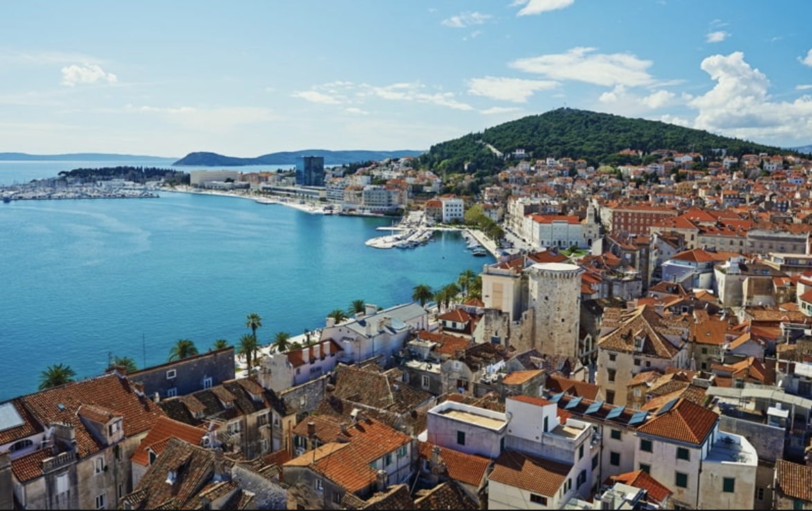
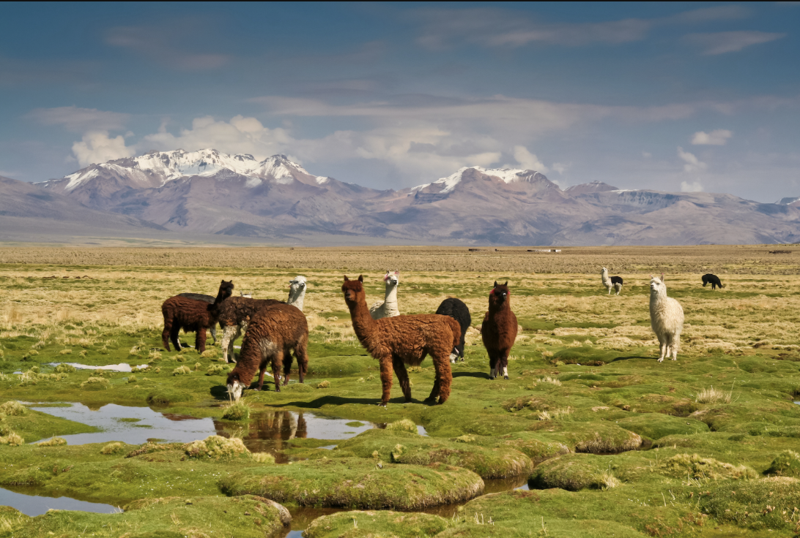
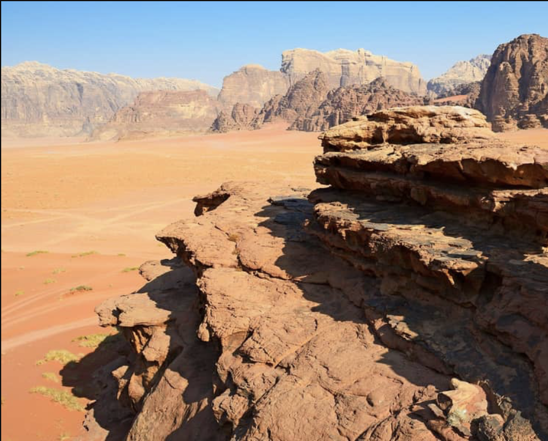

Besser reisen.
Weniger zahlen.
Keine KI-generierten Routen - sondern echte Erfahrung aus 50+ bereisten Ländern und ein persönliches Qualitätsnetzwerk vor Ort. So sparst du bis zu 30% deines Budgets, ohne Abstriche beim Erlebnis.
Wohin soll die Reise gehen?
Klicke auf eine Region, um Routen und Länder-Infos zu entdecken.







Niklas – persönliche Reiseberatung aus erster Hand
Ich bin kein Reiseblog, kein Affiliate-Link-Portal. Ich bin Niklas – Reiseberater mit 8+ Jahren Erfahrung in 50+ Ländern. Ich plane deine Reise so, dass du das Maximum erlebst und das Minimum ausgibst.
Keine Provision, keine bezahlten Empfehlungen – nur ehrliche Tipps aus echten Erfahrungen.


Mit mir sparst du echtes Geld –
ohne auf Erlebnisse zu verzichten
Jeder Euro, den du unnötig ausgibst, ist ein Erlebnis weniger. Ich kenne die Tricks, die Plattformen und die Routen, die sich wirklich lohnen.
Optimierte Routen
Schlechte Routenplanung kostet dich unnötige Transportkosten und verlorene Tage. Ich plane die effizienteste Route – du siehst mehr und zahlst weniger.
Beste Unterkünfte
250+ persönlich getestete Hotels, Hostels und Guesthouses. Ich kenne die versteckten Perlen, die halb so viel kosten wie die touristischen Fallen.
Smarter Transport
Wann fliegen, wann nehmen Bus oder Nachtbus? Ich weiß, welche Transportmittel günstig, sicher und komfortabel sind – und welche du meiden solltest.
Typisches Beispiel: 3 Wochen Südostasien
Echte Reisen.
Echte Erfahrungen.
Keine gefakten Bewertungen – nur ehrliches Feedback von Leuten, die ich auf ihre Reise geschickt habe.
"Niklas hat unsere 3-Wochen-Rundreise durch Vietnam und Kambodscha perfekt geplant. Wir haben locker 350 € gespart – und dabei noch die besseren Unterkünfte bekommen. Kein Reiseführer der Welt hätte uns das gegeben."
"Endlich jemand, der nicht einfach TripAdvisor-Empfehlungen rauskopiert. Niklas kennt die Spots wirklich – das merkt man sofort. Meine Japan-Reise war dadurch auf einem völlig anderen Level."
"Ich war skeptisch, ob sich eine Beratung lohnt. Spoiler: absolut. Die Route durch Kolumbien und Peru war maßgeschneidert – und hat uns viele teure Anfängerfehler erspart, die wir beim ersten Mal gemacht haben."
Bereit, deine Traumreise zu planen?
Kein generischer Reiseführer. Keine bezahlten Empfehlungen. Nur meine persönliche Erfahrung aus 8+ Jahren und 50+ Ländern – für deine individuelle Traumreise.
Alle Reiseregionen
Klicke auf ein Land, um Routen und Details zu sehen.
Interaktive Reiserouten
Wähle eine Route aus der Liste.
Wähle eine Route aus der Liste links.
Praktische Reiseinfos
ATMs, Visa, SIM-Karten, Transport & beste Reisezeit - alles aus erster Hand.
Hey, ich bin Niklas.
Hinter jedem Tipp steckt eine echte Geschichte.
![Niklas Nordin – Reiseberater routecircle]()
Hey, ich bin Niklas. Seit über acht Jahren lebe ich für das Reisen - nicht nur als Tourist, sondern als jemand, der Länder wirklich versteht. Ich habe auf vier Kontinenten gelebt und gearbeitet, mir ein Netzwerk aus lokalen Kontakten aufgebaut und dabei jedes Hostel, jedes Restaurant und jede Route aus erster Hand erlebt.
Was ich hier teile, sind keine Google-Ergebnisse - das sind echte Erfahrungen aus tausenden Kilometern unterwegs.
Durch meine Reisen habe ich mir ein weltweites Netzwerk aus Locals, Hostel-Betreibern, Guides und anderen Reisenden aufgebaut. Ob der beste Straßenstand in Hanoi, ein versteckter Strand in Thailand oder der günstigste Grenzübergang in Mittelamerika - ich kenne jemanden, der es weiß.
Beratung anfragenPersönliche Reiseberatung
Du hast einen Traum. Ich habe die Erfahrung. Lass uns gemeinsam deine Reise planen.
Ob du zum ersten Mal alleine reist oder schon erfahren bist und einfach die besten Geheimtipps suchst - ich stehe dir zur Seite. Mit persönlicher Beratung, maßgeschneiderten Routen und einem weltweiten Netzwerk mache ich deine Reise unvergesslich.
Wähle deinen Wunschtermin
Ich rufe dich zum gewählten Zeitpunkt an. Kostenlos & unverbindlich – 15 Minuten reichen für den ersten Check.
Häufige Fragen
Alles, was du vor deiner Buchung wissen solltest.
Noch offene Fragen? Schreib mir direkt.
Kostenlose Erstberatung anfragenAlles durchsuchen
Finde Routen, Länder und Infos - über alle Regionen weltweit.
Was kostet meine Reise?
Berechne dein Reisebudget realistisch — basierend auf echten Erfahrungswerten.
Deine Reiseparameter
Dein Budget-Überblick
Langzeit-Routen für echte Abenteurer
Von 3 bis 18 Monate - komplette Reisepläne für Lateinamerika, Südostasien, Europa und die USA.
Jede Route ist ein Ausgangspunkt, kein starres Programm. Zeit, Budget und Interessen werden individuell auf dich zugeschnitten – egal ob du 3 Monate oder 18 Monate reist, mit 30 € oder 80 € pro Tag.
Deine Wunschliste
Alle gespeicherten Routen auf einen Blick - markiere Routen mit ⭐ um sie hier zu sammeln.